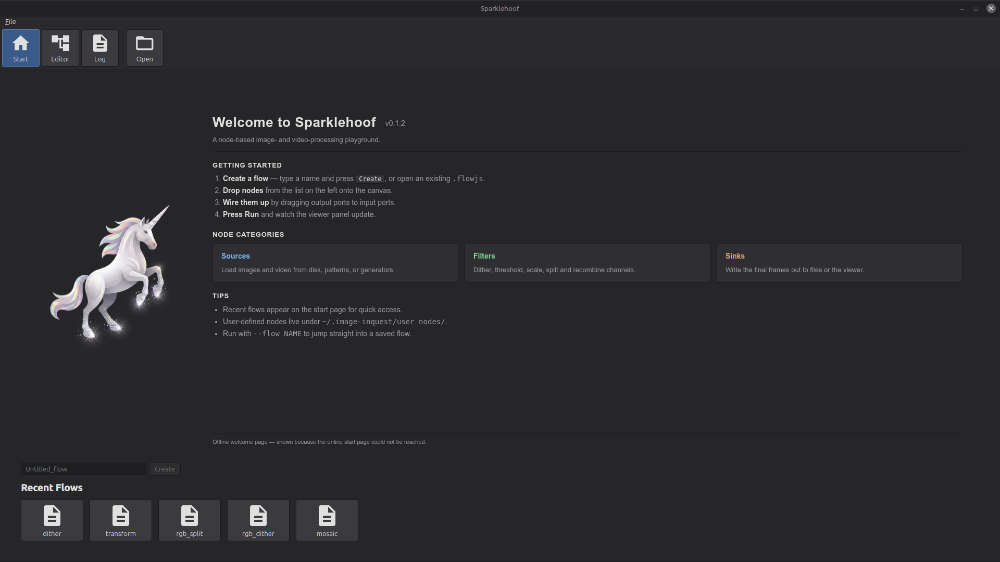
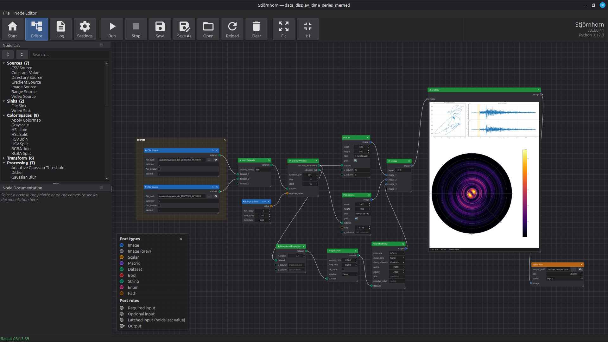
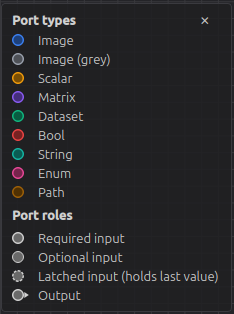

Stjörnhorn v0.3.0
Overview
Stjörnhorn is a desktop application for building image- and video-processing workflows in a node-based visual editor. Drop sources, filters, and sinks onto a canvas, wire them up, press Run, and watch the output update in the built-in viewer.
Typical uses:
- Experiment with image-processing operations (dithering, thresholding, normalisation, scaling, channel splitting, …) without writing code.
- Compose filters into reusable flows and save them to disk.
- Batch-convert and composite images by wiring up file sources and sinks.
- Drive parameters from numeric streams to animate values across a video — slide an overlay, ramp a threshold, fade in a mask.
Installation
Prerequisite: Python 3.10 or newer.
pip install -r requirements.txt
Or install in editable mode together with the
stjornhorn console entry point:
pip install -e .Pre-built binaries (Windows zip, Linux AppImage) are also attached to each tagged GitHub release — no Python toolchain required for end users.
Running
python src/main.pyOptional command-line arguments:
| Flag | Description |
|---|---|
--no-splash |
Skip the startup splash screen. |
--flow FILE |
Load a flow at startup and open it directly in the editor.
Accepts a full path to a .flowjs file or a
bare flow name (looked up in flow/, with or
without the .flowjs extension).
|
Unrecognised flags are forwarded to Qt — useful for
-style, -platform, etc.
Start page

The start page is the landing screen when the app opens. From here you create a new flow or pick up where you left off with an existing one.
- Name input — type a name for a new flow.
Names may contain ASCII letters, digits, and the characters
_ # + -. The input also sets the filename stem that Save will use later (e.g. the namedither_labsaves toflow/dither_lab.flowjs). - Create — opens the node editor with a fresh empty flow whose name matches the input. Disabled until the input contains a valid name; pressing Enter in the input triggers it.
- Open (toolbar, top) — launches a file dialog
to load any
.flowjsfile from disk. The dialog starts in the app'sflow/directory but you can browse anywhere. - Recent Flows — a grid of tiles for flows you have recently created, opened, or saved. Click a tile to open that flow. Each tile shows the flow's name; hover to see the full path. The grid reads "No recent flows" until you have used one.
Node editor

The node editor is where flows are built and run. A flow is a graph of nodes — sources produce images, filters transform them, sinks consume them — connected by typed ports. The editor gives you a palette, a canvas to wire nodes together, an output preview, and a toolbar to drive the flow.
Layout
- Node List (dockable, left) — the palette of every registered node, grouped into a tree by section (Sources, Sinks, Output, Color Spaces, Transform, Processing, Temporal, Math, Composit, Debug, …). Each section is collapsible; the dock has expand-all / collapse-all buttons. A search box at the top filters live and auto-expands matching groups so leaves never hide behind a closed section. Drag an entry onto the canvas to instantiate it. Toggle the dock via the View menu; it can be floated, re-docked, or closed.
- Canvas (centre) — the flow graph. Each node shows its title, output sockets stacked at the top, input sockets with inline parameter widgets at the bottom (Blender shader-editor layout). A small × in the top-right of a node deletes it; a diagonal grip in the bottom-right resizes the node — drag wider and every inline widget grows along with the body. Scroll to zoom; middle-mouse-drag to pan. Dropping a node from the palette places it at the cursor.
- Status bar (bottom) — shows the last successful / informational message, such as "Ran at 14:23:55" or "Saved to flow/x.flowjs". Errors pop up in a floating red banner at the top right instead, so long multi-line messages stay readable.
Connecting nodes
- Drag from an output port (top of a node) to an input port (bottom of another). The connection is only accepted if the port types are compatible — e.g. an Image (grey) output may feed an input that accepts greyscale.
- Drag an existing link off either end to remove it.
- One output can drive many inputs; each input accepts exactly one upstream.
- Unconnected port circles are filled black; once connected, the dot fills with the type colour.
Port legend
A floating legend in the bottom-left of the canvas explains the visual language of the ports. View ▸ Port Legend toggles it; the small ✕ on the legend hides it until the menu re-enables it.

The legend covers two axes:
- Port types — each data type has its own colour. Connections are accepted only when the output port's type and the input port's accepted types overlap. An unconnected port shows the colour as a thin ring around an empty centre; a connected port fills with the colour.
- Port roles — the ring style tells you
how the port behaves:
- Required input — solid ring. The node waits for data on this port before it can fire.
- Optional input — thin solid ring. The node fires without waiting for this port. Leave it dangling and the node uses its default; connect it and it counts as required.
- Latched input — dashed ring. The port keeps its last received value across frames. Useful for pairing a one-shot source (an image, a CSV) with a streaming clock — see Held inputs.
- Output — small triangular glyph next to the dot. One output can drive any number of inputs; each input can be driven by at most one output.
Toolbar — Flow section
- Run — execute the flow once. Sources push data through the graph to the sinks. The status bar updates with the run time; any exception shows up in the error banner.
- Save — write the current flow to
flow/<name>.flowjs, where<name>is the flow's current name. - Save As… — write the current flow to a path you choose. The stem of the chosen filename becomes the flow's new name (which is then used by future Save clicks).
- Open — load another
.flowjsfile, replacing the current flow. - Clear — remove every node and connection from the canvas. Asks for confirmation.
Toolbar — View section
- Fit — zoom and scroll so the whole graph fits the viewport.
- 1:1 — reset the view transform to 100% zoom.
- V-Stack — align two or more selected nodes on a shared X axis and stack them top-to-bottom (preserves their current vertical order). Disabled until ≥ 2 nodes are selected.
- H-Stack — align two or more selected nodes on a shared Y axis and arrange them left-to-right (preserves their current horizontal order). Disabled until ≥ 2 nodes are selected.
Building a flow
- From the start page, type a name for the flow and press Create.
- Drag a source from the palette (e.g. Image Source) onto the canvas. Click the path widget on the node body to pick an input file.
- Drag one or more filters onto the canvas and wire the source's output to the filter's input.
- Drag a Display node onto the canvas and wire it after the last filter — its inline preview is the result, no sink required.
- Press Run. The status bar shows the run time; the Display node renders the live frame inside its body.
- Tweak parameters and press Run again. To
persist work, press Save — the flow is
written to
flow/<name>.flowjs.
Adding an output sink
To save the result to disk, add a File Sink (single image) or Video Sink (encode a stream) downstream of your filters in addition to (or instead of) Display. The eye button next to a File Sink's path opens the written file in the OS image viewer.
Flow files
Flows are JSON files with the .flowjs extension
(just JSON — the extension makes them easy to associate with
the app on the desktop). The format finalised in v0.1.35; on
disk every node carries a port_defaults map of
the literal default for each editable port. Older flows
written with the legacy params key still load —
the loader reads it as a fallback.
Saved flows store paths under the app's input/ and
output/ folders as relative paths, so a flow stays
portable across machines that share the same input layout.
Execution model
Stjörnhorn is push-based. Sources produce frames and push them downstream; each node fires as soon as every input it needs has data. There is no central scheduler walking the graph and no buffered queues between nodes — a frame moves from source to sink in a single chain of calls.
A linear flow
The simplest flow has one source, a few filters and a sink in a straight line:
Many inputs, one trigger
A node with several inputs (e.g. Mosaic, Masked Blend, RGBA Join) only fires once every required input has received data for the current frame:
One source, many consumers
An output can drive any number of inputs (fan-out). Each downstream consumer gets the same frame and runs independently:
Streaming clocks and held inputs
When a one-shot source (an image, a CSV) feeds into a node alongside a streaming source (a Range Source counter, a Video Source), the one-shot input can be marked held — it remembers its single value and reuses it across every tick of the clock:
$value$ template writes frame_001.png, frame_002.png, …The flow runs on a background thread so the UI stays responsive; the currently-executing node is highlighted live in the editor as the data marches through the graph.
Node anatomy
A node is a coloured box on the canvas with three kinds of slots: outputs at the top, inputs at the bottom, and parameters between them. Outputs produce values, inputs consume values, parameters configure how the node behaves each frame. Connections are made by dragging from an output socket on one node to an input socket on another.
Three kinds of node
- Sources have outputs but no inputs. They feed data into the flow — load an image, decode a video file, walk a directory, generate a numeric ramp.
- Filters have both inputs and outputs. They transform data — blur a frame, project a dataset, plot a curve, blend two images.
- Sinks have inputs but no outputs. They consume data as a side effect — write a file, encode a video.
Each kind is colour-coded with a coloured stripe on the left of its node body in the editor.
Each input and output port carries a colour for its data type and a ring style for its role (required, optional, latched). The full visual key — together with a screenshot of the on-canvas legend — is in Node editor ▸ Port legend.
Parameters
Each parameter on a node is rendered as an inline widget on the node body — a spin box, slider, checkbox, drop-down or path picker — and comes in one of two flavours:
- Port parameters sit on an input row with a socket dot next to the widget. Type a value into the widget to use it as a literal; or wire any compatible source into the socket and the streamed value drives the parameter per frame. When the port is driven, the inline widget is greyed out — the upstream wins until you disconnect it. See Param-as-port.
- Constant parameters sit between the output and input rows with no socket dot, rendered with an italic caption. They configure the node once and are not drivable from upstream — file paths on sources, the codec on a video sink, the layout descriptor on Mosaic.
Reading the node body
Reading a node from top to bottom: name and the small × close button at the top, then output sockets (with the type colour and the output glyph), then any constant parameters in italic, then input sockets with their inline parameter widgets at the bottom. A diagonal grip in the bottom-right resizes the node — drag wider and every inline widget grows along with the body.
Data types
Every connection in a flow carries one of nine data types. The legend on the canvas shows the colour for each. A connection is accepted only when the output's type matches one of the input's accepted types.
| Type | Carries | Used for |
|---|---|---|
| Image | A colour frame (BGR). | Photos, video frames, colour output of filters. |
| Image (grey) | A single-channel image. | Masks, FFT magnitudes, NCC scores, dither output, individual colour channels. |
| Scalar | A single numeric value. | Counters, ramps, expression results — anything that drives a numeric parameter. |
| Matrix | A 2-D numerical array of arbitrary type. | Complex FFT spectra, transformation matrices, intermediate analytics that aren't images. |
| Dataset | Labeled tabular data (rows × named columns). | Seismic traces, CV curves, I-V sweeps, spectra — anything you'd plot with a plotter or feed through CSV. |
| Bool | True / false. | Drives boolean parameters. |
| String | Text. | Drives text-valued parameters (notification messages, column-name lists). |
| Enum | A selection from a fixed list. | Interpolation methods, dither algorithms, video codecs. |
| Path | A file or folder path. | Drives file-path parameters. |
Many filters accept either Image or Image (grey) on the same input — Median, Scale, Shift, Rotate, Flip, Invert, Normalize, etc. — and emit whichever they received, preserving the colour space.
Frame metadata
Each value travelling between nodes carries a small bag of
side metadata along with the payload. You don't usually see
it, but two surfaces let you read it: the
Meta Inspector debug node prints every key for the
frame it sees, and the File Sink /
Video Sink filename templates can reference any
metadata key as $key$ to build per-frame
output paths.
Some keys are stamped automatically — you don't need to wire anything up:
| Key | Stamped by | Meaning |
|---|---|---|
frame_index |
Every output port | Per-output frame counter, starting at 0 on each run. |
source_path |
Image Source, CSV Source, Directory Source | Path the frame was loaded from. Filename templates also expand $source_stem$, $source_name$ and $source_ext$ from this. |
| (scalar input names) | Any node with a Scalar input port | The current value of every Scalar input on the emitting node is stamped under its port name. So if a filter has a Scalar input called tick, every frame it emits carries tick in its metadata, and a downstream sink can use $tick$ in its filename template. |
window_start / window_end |
Sliding Window | Row indices of the current window. Plot Series reads these to draw a moving band overlay across panels. |
Dataset-side metadata
Dataset payloads also carry a parallel set of named attributes alongside the data table itself. Source nodes and analytic filters use these conventions; visualisation nodes read them when present.
| Attribute | Set / read by | Meaning |
|---|---|---|
source_path |
CSV Source sets it; plotters read it. | The CSV file the dataset was loaded from. |
units |
Directional Projection sets it; Plot XY, Plot Series and Hodogram read it. | A per-column unit string used as an axis label suffix. |
sample_rate |
Carried forward through every dataset filter. | Sample rate in Hz. Set step = 1 / sample_rate on Add Index Column or Plot Series for a seconds axis. |
thetas_rad |
Directional Projection sets it; Polar Heatmap reads it. | The radial angle each column corresponds to, so polar visualisers don't have to parse column names. |
See the File Sink entry for the full filename
template syntax, including width-padding ($frame_index:4$
produces 0001, 0002, …).
Param-as-port
Every numeric, boolean, enum, string and path parameter on a node is also a port. Type a value into the inline widget to use it as a literal; or wire any source of the matching type into the port's socket and the streamed value drives the parameter once per frame.
While the port is connected, the inline widget is greyed out — the upstream wins. Disconnect the wire and the widget becomes editable again, retaining whatever value you last typed.
Typical use: connect a Range Source to the Overlay node's angle port to animate a rotation over a video, or to the xpos port to slide an overlay across the frame.
Held inputs
Some inputs keep the last value they received and reuse it across later frames. They render with a dashed ring around the socket dot.
The pattern is "one piece of reference data plus a streaming clock". Repeat uses it on its data input so a single still image or CSV survives across every tick of its tick clock. Sliding Window uses it on its dataset input so a one-shot dataset stays alive while a streaming counter walks the window across it.
A held input does not by itself end the run when its source finishes — only the streaming (non-held) inputs drive the end of the flow.
Skipping nodes
Right-click a filter and choose Skip to bypass it without removing the connections: the node's input is forwarded straight to its output, as if the node were replaced by a wire. Useful for A/B-comparing a flow with and without a filter.
Skip is only available when at least one input and one output of the node share a compatible type. Sources (no inputs) and sinks (no outputs) cannot be skipped.
Sources
Sources have outputs only — they feed data into the flow. Reactive sources emit once per run and re-fire automatically when any parameter changes, so still images and constants update live as you tweak knobs. Streaming sources push one frame at a time and only run when you press Run.
Image Source
Reads a single still image from disk and pushes it into
the flow. Reactive: any parameter change re-runs the
flow. The path the image came from is stamped on each
frame's metadata under source_path, so
downstream sinks can use $source_stem$ in
their filename templates.
Outputs
- image — Image. The decoded picture.
Parameters
- file_path — path to a JPEG, PNG, WebP or CR2 (RAW) file. Paths inside the app's input folder are stored relative to it so saved flows port across machines.
Video Source
Decodes frames from a video file and streams them through the graph. Not reactive — runs only when you press Run, to avoid restarting long decodes on every keystroke. Frame count is shown as a badge in the node header once the file has been probed.
Outputs
- image — Image. One BGR frame at a time.
Parameters
- file_path — path to an MP4, AVI, MOV or MKV file.
- max_num_frames — cap on the number of frames decoded.
-1means the whole stream.
Directory Source
Streams every readable image in a folder as a sequence of
frames, sorted by file name. Useful as a "video out of a
folder of stills" fixture. Each emitted frame carries the
originating file's source_path in its
metadata, so a downstream File Sink template can
reference $source_stem$ to write
per-input-image output paths.
Outputs
- image — Image. One file per frame.
Parameters
- directory — folder to walk.
- include_subdirectories — when on, walks the folder recursively. When off, only the top level is read.
CSV Source
Reads a CSV file as a Dataset. Lines starting with
# are skipped automatically, so files with a
metadata header (seismic ASCII traces, gnuplot output,
instrument logs) load without extra setup. Reactive: any
parameter change re-runs the flow. The originating file
is stamped both on the frame metadata and on the
dataset's own attribute table under source_path.
Outputs
- dataset — Dataset. Each CSV column becomes a column in the dataset.
Parameters
- file_path — path to the CSV / TXT file.
- has_header — when on, the first non-comment line names the columns; when off, columns are auto-named
c0,c1, … - delimiter — column separator. Use
\tto mean a tab character.
Gradient Source
Generates a single-channel greyscale gradient image. Use as a procedural mask for Masked Blend — tilt-shift, vignette, cross-fade — without shipping a hand-painted PNG. Reactive.
Outputs
- image — Image (grey). Width × height greyscale image.
Parameters
- width / height — output image size in pixels.
- direction — Vertical, Horizontal or Radial (centre-outward).
- mode — Symmetric (0 in the middle, 255 at both ends — vignette, tilt-shift) or Linear (0 → 255, one-sided cross-fade). Ignored for radial direction.
- band_width — width of the central plateau, 0..1. Higher values keep more of the image at the maximum.
Range Source
Emits a numeric range, one value per frame. Drives downstream parameters — animate an Overlay angle, a Math expression input, a counter for File Sink templating. Whole-number increments emit integers; fractional increments emit floats. Streaming.
Outputs
- value — Scalar. One number per frame.
Parameters
- min_value / max_value — inclusive bounds of the emitted sequence.
- increment — step between consecutive values. Must be positive.
Constant Value
Emits a single number. Reactive. Use as a fixed factor or offset feeding into Math, or to drive any numeric parameter from a single editable knob without spinning up a Range Source.
Outputs
- value — Scalar.
Parameters
- value — the number to emit.
Output
Display
A pass-through node that shows each frame inline inside its own body via a live preview. Drop it anywhere in a flow to watch the data flow through; resize the node body to grow the preview. Accepts images, scalars and matrices — scalars and matrices render as text, so the inline preview is the result for those payload kinds. Image previews show a smoothed FPS read-out in the corner.
Inputs
- image — Image, Image (grey), Scalar or Matrix.
Outputs
- image — same payload, passed through unchanged.
Sinks
Sinks consume data as a side effect — writing a file, encoding a video — and do not propagate further. A flow that ends at a Display node runs fine without one.
File Sink
Writes each incoming frame to disk. The path is a filename template that expands placeholders against the frame's metadata, so a single sink can write a whole sequence of numbered files.
Inputs
- image — Image or Image (grey).
Parameters
- output_path — destination path. May contain
$token$placeholders that expand at write time:$frame_index$— the per-frame counter.$source_stem$,$source_name$,$source_ext$— the originating file (when the frame came from Image Source, Directory Source or CSV Source).$flow_name$— the saved name of the flow.- Any Scalar port value that an upstream filter stamped — see Frame metadata.
$tok:N$zero-pads numeric values, e.g.frame_$frame_index:4$.pngwritesframe_0001.png,frame_0002.png, … With no placeholders the file is overwritten on every frame.
An eye button next to the path opens the most recently written file in the OS default image viewer.
Video Sink
Encodes incoming frames into a video file. The encoder opens on the first frame (dimensions are taken from the data), every later frame must match its shape, and the container is finalised when the upstream stream ends. Greyscale inputs are promoted to BGR automatically.
Inputs
- image — Image or Image (grey).
Parameters
- output_path — destination path. Filename tokens are resolved from the first frame's metadata (per-frame tokens like
$frame_index$aren't useful here — for per-frame paths, use File Sink instead). - fps — frame rate written into the container header.
- codec — MP4V (default) or XVID.
Color Spaces
Convert images between colour spaces or split them into per-channel greyscale planes for independent processing, then merge back.
Grayscale
Converts a colour image to single-channel greyscale.
Inputs
- image — Image.
Outputs
- image — Image (grey).
RGBA Split
Splits a colour image into its four channels. Plain (non-alpha) inputs produce a fully-opaque alpha plane so downstream nodes always see a well-defined alpha output.
Inputs
- image — Image.
Outputs
- B / G / R / A — Image (grey), one per channel.
RGBA Join
Merges single-channel inputs into a colour image. The alpha input is optional: connect it for a BGRA output; leave it open for plain BGR. Pixel-exact inverse of RGBA Split.
Inputs
- B / G / R — Image (grey), required.
- A — Image (grey), optional. When connected, the output carries the alpha channel.
Outputs
- image — Image.
HSV Split
Splits a colour image into its HSV components. Hue uses the full 0..255 range so HSV Join round-trips back exactly. BGRA inputs drop the alpha channel; HSV has no alpha.
Inputs
- image — Image.
Outputs
- H / S / V — Image (grey), one per channel.
HSV Join
Inverse of HSV Split. Merges H, S, V planes back into a colour image.
Inputs
- H / S / V — Image (grey).
Outputs
- image — Image.
HSL Split
Same as HSV Split, but using the HSL colour model.
Inputs
- image — Image.
Outputs
- H / S / L — Image (grey).
HSL Join
Inverse of HSL Split.
Inputs
- H / S / L — Image (grey).
Outputs
- image — Image.
Transform
Scale
Resizes the input by a percentage factor — 100 leaves it unchanged, 50 halves it, 200 doubles it.
Inputs / Outputs
- image — Image or Image (grey); output type matches input.
Parameters
- scale_percent — scale factor in percent.
- interpolation — resampling method. Nearest is fast and pixelated; Linear, Cubic and Lanczos4 are progressively smoother and slower; Area is the right choice when downsampling.
Resize
Resizes the input to an explicit width and height using one of three layout strategies. Black is used for fills; for BGRA inputs that means transparent black.
Inputs / Outputs
- image — Image or Image (grey); output type matches input.
Parameters
- width / height — target dimensions in pixels.
- method — Scale stretches the source on each axis independently (aspect ratio not preserved); Crop or Fill centres the source at native scale on a target-sized canvas (overflow is cropped, uncovered area is black); Best Fit scales uniformly to the largest size that fits inside the target, then centres on a black canvas (letterbox / pillarbox).
Shift
Translates an image by integer pixel offsets. The canvas stays the same size; pixels that move out of frame are dropped, newly exposed areas are black.
Inputs / Outputs
- image — Image or Image (grey).
Parameters
- offset_x — horizontal shift in pixels. Positive moves right.
- offset_y — vertical shift in pixels. Positive moves down.
Crop
Cuts a rectangular region out of the input. The rectangle is clamped to the input bounds, so the node always emits a positive-area image even if the requested rectangle extends beyond the source.
Inputs / Outputs
- image — Image or Image (grey).
Parameters
- x / y — top-left corner of the rectangle in input-pixel coordinates.
- width / height — rectangle size in pixels.
Rotate
Rotates the image around its centre by an arbitrary angle. Positive angles are counter-clockwise.
Inputs / Outputs
- image — Image or Image (grey).
Parameters
- angle — rotation in degrees.
- expand — when on, the output canvas grows so no pixel is clipped. When off, the canvas keeps the input dimensions and corners may fall outside.
Flip
Mirrors the image. Both is equivalent to a 180° rotation.
Inputs / Outputs
- image — Image or Image (grey).
Parameters
- mode — Horizontal, Vertical or Both.
Processing
Adaptive Gaussian Threshold
Adaptive binary thresholding using a local Gaussian-weighted mean. Each output pixel is white or black depending on whether the source pixel was above or below the local mean of its neighbourhood, minus a constant. Useful for binarising photos with uneven lighting.
Inputs
- image — Image or Image (grey). Colour inputs are reduced to greyscale first.
Outputs
- image — Image (grey). Always single-channel binary.
Parameters
- block_size — side length of the neighbourhood used to compute the local threshold, in pixels. Must be odd and ≥ 3.
- c — constant subtracted from the local mean. Negative values bias toward white; positive toward black.
Dither
Reduces the image to two levels using a chosen dithering algorithm — Bayer ordered patterns, random noise, or various error-diffusion kernels. Colour inputs are auto-converted to greyscale; output is always greyscale.
Inputs
- image — Image or Image (grey).
Outputs
- image — Image (grey).
Parameters
- method — one of Bayer 2 / 4 / 8 (ordered patterns; deterministic, no neighbour artefacts), Noise (random threshold), Floyd–Steinberg, Stucki, Atkinson, Burkes, Sierra, Diffusion X, Diffusion XY (error-diffusion kernels of varying spread).
Median
Square-kernel median blur. Effective at removing salt-and-pepper noise without smearing edges.
Inputs / Outputs
- image — Image or Image (grey); output type matches input.
Parameters
- size — kernel side length in pixels. Must be odd and ≥ 3. Larger kernels remove more noise at the cost of fine detail.
Gaussian Blur
Smooths the image with an isotropic Gaussian kernel.
Inputs / Outputs
- image — Image or Image (grey).
Parameters
- ksize — kernel side length in pixels. Must be odd and ≥ 3. Larger kernels blur more strongly and run more slowly.
- sigma — standard deviation of the Gaussian. Set to 0 to derive it automatically from the kernel size.
Normalize
Histogram equalisation. Stretches the dynamic range so dim images use the full 0..255 scale. Colour inputs are equalised per channel.
Inputs / Outputs
- image — Image or Image (grey); output type matches input.
Invert
Per-channel image inversion (255 − pixel). Type-preserving.
Inputs / Outputs
- image — Image or Image (grey).
Apply Colormap
Colorises a greyscale image through a chosen lookup table and emits a colour image. Expects the input to already be tonemapped into 0..255; for HDR sources (raw FFT magnitudes, depth maps) apply log compression upstream.
Inputs
- image — Image (grey).
Outputs
- image — Image.
Parameters
- colormap — perceptually-uniform palettes (Viridis, Plasma, Magma, Inferno), classic spectrogram palettes (Jet, Turbo) and utility palettes (Hot, Bone, Parula, Ocean, Cool).
NCC
Normalised cross-correlation template matching: searches for a small reference image inside the input and emits a score map showing how strongly each location matches.
Inputs
- image — Image (grey). The picture to search.
Outputs
- image — Image (grey). The score map.
Parameters
- template — path to the reference image. Colour templates are reduced to greyscale on load.
- retain_size — when on (default), the score map is padded to the input size and each response is centred on its corresponding template-centre pixel. When off, the raw response is emitted, smaller than the input.
Temporal
Temporal nodes accumulate state across frames of a video stream. The state is reset at the start of every run.
Frame Difference
Per-pixel absolute difference between the current frame and the previous one. The first frame in a stream produces a black output (no prior frame to diff against). A mid-stream resolution change resets the buffer rather than raising.
Inputs / Outputs
- image — Image or Image (grey).
Temporal Mean
Rolling per-pixel arithmetic mean over the last few frames. Reduces additive Gaussian-style noise on a static scene at the cost of smearing motion. While the buffer fills, the mean of however many frames have arrived so far is emitted.
Inputs / Outputs
- image — Image or Image (grey).
Parameters
- window — number of recent frames averaged per output. Larger values denoise more aggressively but blur motion.
Temporal Median
Rolling per-pixel median over the last few frames. Strong against transient outliers — single-frame spikes, flicker, salt-and-pepper noise — without the smearing a mean would produce.
Inputs / Outputs
- image — Image or Image (grey).
Parameters
- window — number of recent frames whose per-pixel median is emitted.
Frequency
Frequency-domain operations on greyscale images and on datasets.
FFT 2D
Computes the 2-D discrete Fourier transform of a greyscale image. Pair with Inverse FFT 2D for a pixel-exact round trip; pair with Apply Colormap on the magnitude output for a coloured spectrum preview.
Inputs
- image — Image (grey).
Outputs
- spectrum — Matrix. The complex spectrum, fftshifted so DC is at the centre. Wire into Inverse FFT 2D to round-trip.
- magnitude — Image (grey). Log-scaled magnitude normalised to 0..255 for direct preview.
Inverse FFT 2D
The inverse of FFT 2D. Expects the fftshifted complex spectrum and emits a greyscale image.
Inputs
- spectrum — Matrix.
Outputs
- image — Image (grey).
Spectrum
Per-column magnitude FFT of a dataset. Each column of the input becomes a column of the output, indexed by frequency in Hz. Feed the result to Plot Series for stacked spectra, or to Polar Heatmap when combined with Directional Projection.
Inputs / Outputs
- dataset — Dataset.
Parameters
- sample_rate — sample rate of the input in Hz; sets the frequency axis.
- freq_max — clip the radial axis to this frequency.
0keeps the full Nyquist range. - window — taper applied per column before the FFT. Hann suppresses spectral leakage on short windows; None uses the raw rectangular window.
- db_scale — when on, emits 20·log₁₀|F| (dB); when off, raw magnitude.
Math
Math nodes operate on numeric streams. Combine them with Range Source and Constant Value to drive any numeric parameter on any node from a computed value.
Math
Evaluates a small expression over up to nine numeric
inputs. The expression is plain Python-style arithmetic
using the input names v_1, v_2,
… v_9; min, max,
abs; and a curated set of trigonometry and
basic math functions (sin, cos,
sqrt, log, …). The node body
starts with one input row and grows by one as you wire
up the previous tail.
Examples: v_1 + v_2, min(v_1, v_2), v_1 * sin(v_2).
Inputs
- v_1 … v_9 — Scalar, all optional. Disconnected slots are simply absent from the expression's namespace.
Outputs
- value — Scalar. The expression result.
Parameters
- expression — the formula to evaluate.
Clamp
Clamps a numeric input into a bounded range. If the upper bound is below the lower bound the two are swapped before clamping, so a transiently-inverted range during editing is tolerated.
Inputs / Outputs
- value — Scalar.
Parameters
- min_value — lower bound.
- max_value — upper bound.
Composit
Combine two or more images into a single output frame.
Mosaic
Variable-layout image composer. The layout is a tiny
string: rows separated by ;, cells inside a
row by ,, each cell the 1-based index of an
image_i input. For example
1,2;3 places images 1 and 2 side-by-side on
the top row and image 3 below.
Within a row, images are scaled aspect-preserving to the row's tallest input, then placed side-by-side. Rows are then scaled aspect-preserving to the widest row's width and stacked vertically. No black bars, no forced grid — aspect ratios are preserved everywhere. Mixed colour / greyscale inputs are promoted to colour so detail isn't lost.
Inputs
- image_1 … image_9 — Image or Image (grey). Body grows as you wire them up.
Outputs
- image — composed picture.
Parameters
- layout — the layout descriptor string.
Overlay
Composites an overlay image onto a base. The overlay is optionally rotated and scaled, then blended so its centre lands at the configured position. Every numeric parameter is a port — wire a Range Source into angle for spinning, into xpos for sliding, into alpha for fading.
A BGRA overlay's alpha channel acts as a per-pixel mask; the alpha parameter is then a global multiplier on top. The output canvas matches the base; the output is colour if either input is colour.
Inputs
- base — Image or Image (grey).
- overlay — Image or Image (grey).
Outputs
- image — composited result.
Parameters
- scale — overlay scale factor. 1.0 = unchanged. Strictly positive.
- angle — overlay rotation in degrees, counter-clockwise around its centre. The bounding box is expanded so no pixels are lost.
- xpos / ypos — base-image coordinates of the overlay's centre.
- alpha — opacity, 0..1. 0 hides the overlay entirely, 1 makes it fully opaque.
Masked Blend
Per-pixel cross-fade of two images driven by a greyscale mask. Black mask emits the base, white mask emits the overlay, intermediate values cross-fade. Unlike Overlay's uniform alpha, here the mask is a full input — wire any greyscale producer in to drive it (a Gradient Source, an FFT magnitude, a threshold result).
The output is colour if either input is colour. The mask is reduced to a single channel and resized to match the base if its shape differs.
Inputs
- base — Image or Image (grey).
- overlay — Image or Image (grey). Must share the base's H × W.
- mask — Image or Image (grey).
Outputs
- image — blended result.
Data
Data nodes operate on Dataset values — the labeled tabular payload kind. Source datasets typically come from CSV Source; results feed into a visualisation node or back to disk.
Add Index Column
Prepend a synthetic numeric column to the input dataset
at position 0, so it becomes the default X axis
downstream. Useful when a renderer needs an explicit X
axis but the dataset has no natural one — e.g. a
one-column trace from CSV Source. Set
step to 1 / sample_rate for a
seconds axis.
Inputs / Outputs
- dataset — Dataset.
Parameters
- name — name of the new column.
- start — value of the first row.
- step — increment per row. Use 1.0 for sample numbers, 1 / sample_rate for seconds.
Join Datasets
Merges several datasets column-by-column into a single one. The body grows as you wire more inputs.
column_names renames the first column of each
input before joining — required when several
single-column sources all carry the same generic name
(e.g. c0 from CSV Source). Empty
keeps the original names, which must then be distinct.
Inputs
- dataset_1 … dataset_9 — Dataset.
Outputs
- dataset — joined dataset.
Parameters
- column_names — comma-separated rename list, applied to the first column of each connected input.
Directional Projection
Projects a two-component vector signal onto a fan of directions. For each angle around the circle, emits one column equal to x · cos θ + y · sin θ — i.e. the component of the vector along that direction. The building block for directional analyses (polar spectra, polarisation sweeps, beam-forming on two-channel data).
Output columns are named in degrees (e.g.
5.0°) so a Plot Series reads
naturally; the exact angles are also placed on the
dataset's attribute table so Polar Heatmap can
read them directly.
Inputs / Outputs
- dataset — Dataset.
Parameters
- x_column / y_column — names of the two component columns. Empty defaults to the first two columns.
- n_angles — number of directions to emit, equally spaced around the full circle.
Sliding Window
Walks a sliding window across a dataset, driven by a numeric clock. Each tick of the clock re-emits two datasets: the current window slice, and the unmodified full dataset (with the current window bounds stamped on its metadata, so a downstream plotter can draw a moving band without a separate wire).
The dataset input is held — one upstream emit (e.g. one CSV) keeps it alive across all ticks of the clock.
Inputs
- dataset — Dataset, latched. The data to walk.
- window_index — Scalar. The clock — typically a Range Source.
Outputs
- dataset_windowed — Dataset. The current slice.
- dataset_full — Dataset. The unmodified input, with
window_start/window_endstamped on its metadata.
Parameters
- window_size — number of rows in each emitted slice. The window is clamped at the end of the dataset, so the last slice may be shorter.
- step — number of rows between consecutive windows.
Visualization
Visualization nodes render datasets as images, suitable for chaining into Display, a Mosaic, or a File Sink.
Plot XY
Renders two columns of a dataset as an XY line plot.
Axis labels come from the column names; if the dataset
carries a units attribute it is added as a
suffix to each axis label.
Inputs
- dataset — Dataset.
Outputs
- image — Image. The rendered plot.
Parameters
- x_column / y_column — names of the columns to plot.
- width / height — output canvas size in pixels.
Plot Series
Renders every column of the input dataset as an independent time-series trace stacked vertically with a shared time axis. The X axis is synthesised from a per-row step.
When the dataset carries window-bound metadata (typically stamped by Sliding Window), a moving band is overlaid spanning every panel — the highlighted window lines up across channels.
Inputs
- dataset — Dataset.
Outputs
- image — Image.
Parameters
- step — increment per row on the X axis. Use 1 / sample_rate for a seconds axis.
- y_columns — comma-separated list of columns to plot. Empty plots every column.
- width / height — output canvas size.
Hodogram
Plots a two-channel signal as a time-coloured 2-D trajectory: one channel feeds the X axis, another feeds Y, and the line colour walks through a perceptual colormap so the time direction reads correctly. An optional fitted principal axis overlays the dominant direction. Useful for polarisation analysis on seismic and geophone data.
Inputs
- x — Dataset. Provides the X channel.
- y — Dataset. Provides the Y channel.
Outputs
- image — Image.
Parameters
- width / height — output canvas size.
- principal_axis — when on, a fitted line overlays the dominant direction of motion.
Polar Heatmap
Renders a dataset of N directional channels as a polar
heatmap. Each column corresponds to one direction; rows
map to radius. Typically fed by Directional
Projection or Spectrum. When the input
carries the thetas_rad attribute, those
angles drive the layout; otherwise degrees are parsed
from the column names.
Inputs
- dataset — Dataset.
Outputs
- image — Image.
Parameters
- width / height — output canvas size.
- colormap — palette for the heatmap (Viridis, Plasma, Inferno, Magma, Turbo, Jet, Hot).
Streaming
Bridge between one-shot data and a streaming clock.
Repeat
Re-emits a held payload once per tick of a clock. Pairs a
one-shot source (an image, a CSV) with a streaming clock
so the held payload fires once per tick, with the clock
value stamped onto each output frame's metadata.
Downstream sinks can then use $tick$ in
their filename templates without needing an extra
input.
Inputs
- data — any payload kind, latched. The reference data — typically a single image or dataset.
- tick — Scalar. The clock.
Outputs
- data — same payload as the input, re-emitted once per tick. Carries
tickon its metadata.
UI
Pass-through nodes that produce a UI side-effect alongside the frame.
Delay
Sleeps for a configurable number of seconds between frames before forwarding each one. Useful as a slideshow knob, or to make per-frame status updates visible during development.
Inputs / Outputs
- image — Image or Image (grey).
Parameters
- delay_seconds — how long to sleep between frames. Set to 0 to disable pacing entirely.
Notify
Surfaces a status message in the floating banner. Info (blue) and Warning (amber) let the run continue; Error (red) aborts the run. The message is a port — wire any text source in to drive it per frame.
Inputs / Outputs
- image — Image or Image (grey). Pass-through.
Parameters
- message — text shown in the banner.
- severity — Info, Warning, or Error.
Experimental
Effects-style nodes that aren't part of the standard pipeline but are interesting on their own.
Subpixel Mosaic
Renders a colour image as a stylised RGB sub-pixel mosaic: each source pixel is scattered across three mono-channel sub-pixels arranged like a physical display's shadow mask. The raw mosaic distorts the source aspect ratio; an option rescales it back.
Inputs
- image — Image.
Outputs
- image — Image or Image (grey) depending on parameters.
Parameters
- keep_aspect — when on, the mosaic is resampled to match the source aspect ratio. When off, the raw mosaic is emitted (vertical stretch of 4/3).
- output_grayscale — when on, drops the colour and emits the per-pixel sample intensity as a single-channel image.
Debug
Debug nodes are utilities for poking at the application itself — testing parameter wiring, simulating slow nodes, exercising the error banner. They live in their own palette section so they stay out of the way during normal use.
Debug Params
Exhaustive node exposing one parameter of every kind, so every widget can be rendered, edited, saved and loaded through a single node. Image is passed through unchanged.
Inputs / Outputs
- image — Image or Image (grey).
Parameters
- file_path — exercises the path widget.
- count — exercises the integer spin box.
- factor — exercises the float spin box.
- label — exercises the line edit.
- enabled — exercises the checkbox.
- mode — exercises the combo box.
Throw Exception
Raises on every frame. Use it to confirm that the error banner pops up and that flows recover cleanly when a node fails mid-graph.
Inputs / Outputs
- image — Image.
Meta Inspector
Surfaces each frame's metadata to an inline preview
inside the node body. Accepts every payload kind so it
can sit anywhere as a debug probe. Use it to inspect
what source_path, frame_index,
stamp keys etc. look like at a given point in your
flow — handy when wiring up a filename template.
Inputs / Outputs
- data — any payload kind.
Play Gate
Buffers frames until you click the inline Play button. Each click releases one frame downstream — the oldest in the queue, so you step through the stream in arrival order. The queue is unbounded, so it trades memory for honesty rather than silently dropping; keep the upstream stream short. Drains its buffer when toggled into skip mode.
Inputs / Outputs
- data — any payload kind.
File locations
In dev mode (running python src/main.py from a
clone), all files live next to the source tree. In a frozen
bundle they split: read-only data sits inside the bundle
(sys._MEIPASS), writable data moves to a per-user
directory.
| Purpose | Dev mode | Frozen (Linux) | Frozen (Windows) |
|---|---|---|---|
| Saved flows | flow/ |
~/.local/share/Stjornhorn/flow/ |
%LOCALAPPDATA%\Stjornhorn\flow\ |
| Sample inputs | input/ |
~/.local/share/Stjornhorn/input/ |
%LOCALAPPDATA%\Stjornhorn\input\ |
| Default output dir | output/ |
~/.local/share/Stjornhorn/output/ |
%LOCALAPPDATA%\Stjornhorn\output\ |
| Logs | logs/image-inquest.log |
~/.local/share/Stjornhorn/logs/… |
%LOCALAPPDATA%\Stjornhorn\logs\… |
| User-defined nodes | ~/.image-inquest/user_nodes/ |
||
On first launch of a frozen bundle, the per-user directories are created and seeded from the bundled samples — only files that don't already exist are copied, so anything you save persists across launches.
User-defined nodes
Drop a Python module under
~/.image-inquest/user_nodes/ that defines a
subclass of NodeBase,
SourceNodeBase, or SinkNodeBase and
Stjörnhorn picks it up at startup via the same AST-based
registry scan it uses for built-in nodes. Declare your inputs
as InputPort objects (with type, default, and
widget metadata) and your outputs as OutputPort
objects, implement process_impl(), and your node
appears in the palette under whichever
section=… string you passed to
super().__init__.
Keyboard & mouse
| Action | Shortcut |
|---|---|
| Create the named flow (start page) | Enter |
| Toggle full-screen preview (output inspector floated) | F11 |
| Pan the canvas | Middle-mouse drag |
| Zoom the canvas | Mouse wheel |
| Delete a node | × button on the node, or Del while selected |
| Resize a node | Drag the diagonal grip in the bottom-right of the node |
| Multi-select nodes | Drag a rubber-band on empty canvas, or Shift+click |
License
Stjörnhorn is released under the MIT License.